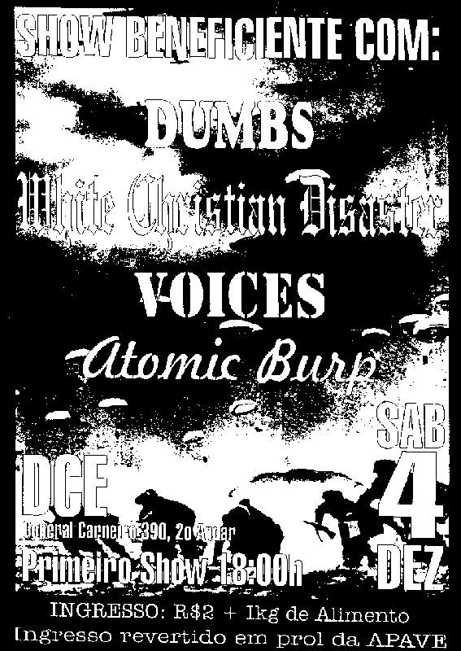

![[voltar pra casa]](../imagens/casa.gif)
show 19991204
dce ufpr: VOICES, ATOMIC BURP, DUMBS e RUSSIAN SCHOOL OF BALLET
mais um showzinho no dce, sabadão à tarde. massa. hoje foi o
show "dos amigos", pois ali todos os integrantes das bandas eram
camaradas uns dos outros. e este também foi um show beneficente,
e os alimentos arrecadados foram para a APAVE (não me pergunte o
que é isso que eu não sei). nesse dia, o nissin não pôde vir pois
estava lá em itajaí, estudando para as provas finais, então
o júnior do SCARECROW o
substituiu nesse show. passamos rapidinho as músicas pra ele
antes do show, o cara pegou e fomos tocar. o nissin que nos
desculpe, mas esse show foi massa pra caralho! tipo, a galerinha
que estava lá curtia a banda, então rolou um agito massa, e nós
estávamos ensaiados, então tudo correu bem. claro, um chimbau
caindo no chão aqui, uma guitarra falhando ali, uma caixa de
baixo queimando no meio do show acolá, mas fora tudo isso, tudo
bem &:) e para nossa surpresa, no fim do show tinha um corinho:
"mais um, mais um"... cara, como é bom sentir que a galera
curtiu seu show. foram tiradas 24 fotos, mas só depois fomos ver
que o filme ficou solto dentro da câmera e não bateu uma foto
sequer... foi divertido. mais um show no dce. mais um show massa. êta
lugarzinho bom de fazer show.
repertório:
01 opinião 02 life o'mine 03 se liga e desliga 04 cdf 05 mentira 06 gás 07 fraco 08 espera 09 vou dormir 10 molecada 666 (DFC)
fotos:
não teve fotocartaz:
